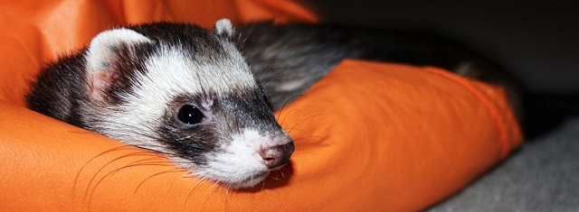
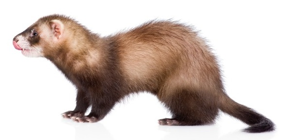
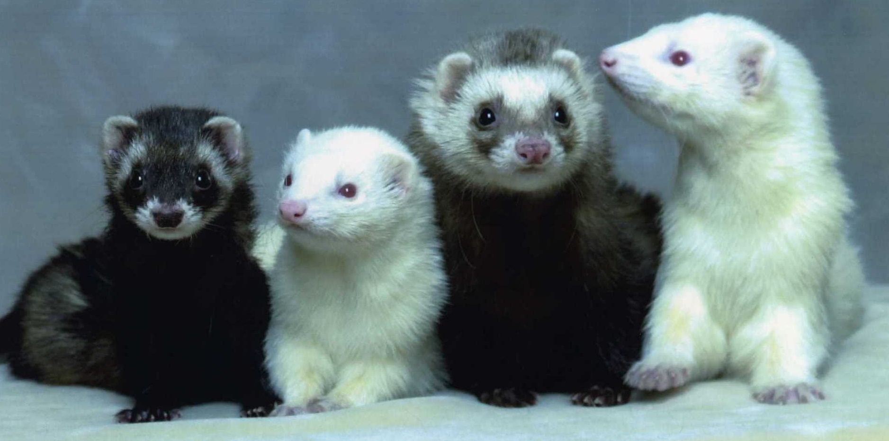

Before You Buy a Ferret as a Pet
Written by Jeremy Xu
Last Updated 09/28/17 by Anonymous Ferret

Thinking about getting a pet ferret?

You've come to the right place!

Ferrets are social animals, and there are many different types of ferrets.
If you want to learn more about ferrets, click on the links at the top of the page.